Two teams, one dashboard: the structural change behind a 51% drop in claim submission time
Hospitals were complaining about the IHX Ops Dashboard, and three group hospital contracts needed a follow-up feature it had no place for. The real problem: the dashboard treated two very different hospital teams as one user.
Role
Product designer, the only designer on the team. Research, IA, UI, prototyping, moderated feedback sessions with hospitals, presenting the design rationale to senior stakeholders, dev handoff.
Team
1 PM, 1 product designer (me), 2 developers
Timeline
4 weeks, March to April 2025
Product
IHX Nucleus, used by hospital insurance teams to manage pre-authorisations and claims for 18,000+ providers in India
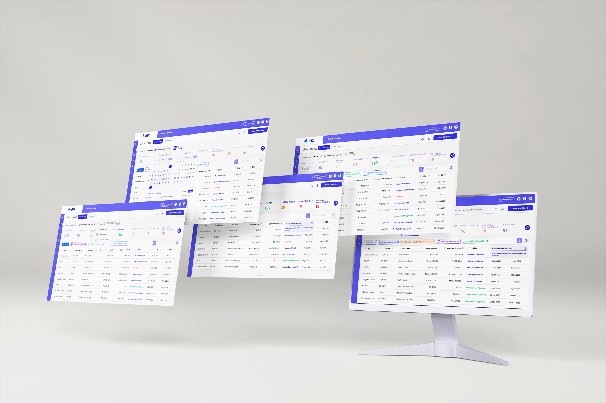
Time to claim submission
−51%
Against a control group that saw no change
Contracts
3
Group hospital contracts signed, all requiring the new follow-up feature
Adoption
900+
Hospitals live on the new dashboard
The product &
The business problem
01IHX
IHX is a health-tech platform for hospital insurance operations in India. Hospitals manage the full claim lifecycle in one place, instead of logging into 35+ insurer portals. It processes 2,00,000+ claims a month for 18,000+ providers, about 40% of India's claim volume.
Of the 35+ insurers, 7 connect through an API. The other 28 run on RPA and email extraction. When that automation fails, the claim disappears and the hospital can't see it. The design had to account for that.
02Why we redesigned it
The Ops Dashboard is where hospital insurance staff spend their working day. It was inherited from IHX's parent insurance company. When IHX became its own company, nobody went back to check how hospital teams actually work.
Hospitals were complaining, and the complaints reached us through account managers and sales. At the same time, a new contract required a follow-up feature, and the dashboard had no sensible place for it.
So the dashboard had to be redesigned. The work started with the research and the data, to understand what was going wrong for hospitals.
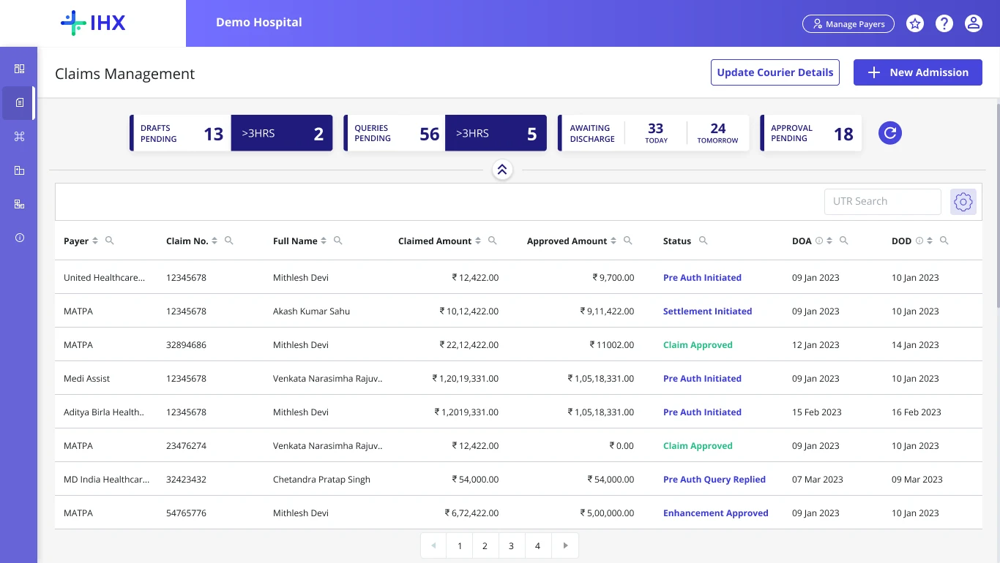
The old Ops Dashboard.
What the research showed
Over a year and a half on IHX products, I had run a user behaviour study with hospital insurance staff: 15+ users across 5+ hospitals and 6+ teams. Account managers and hospital staff added more input during the project.
01It's two workflows, not one
Pre-Auth team
Time-critical · patient-facing
They start the claim before admission, answer insurer queries and start the discharge. A delayed discharge costs the hospital a bed.
Claim team
Finance-critical
They submit the final claim after discharge, settle claims at the end of the day and reconcile payments.
Supervisors
Oversight, not action
They check their team's workload rather than act, so they need counts across several statuses at once.
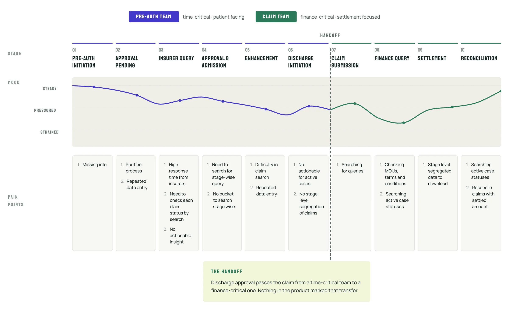
Two teams, ten stages, one handover at discharge.
02Staff were searching around the dashboard
Hotjar · Session heatmap
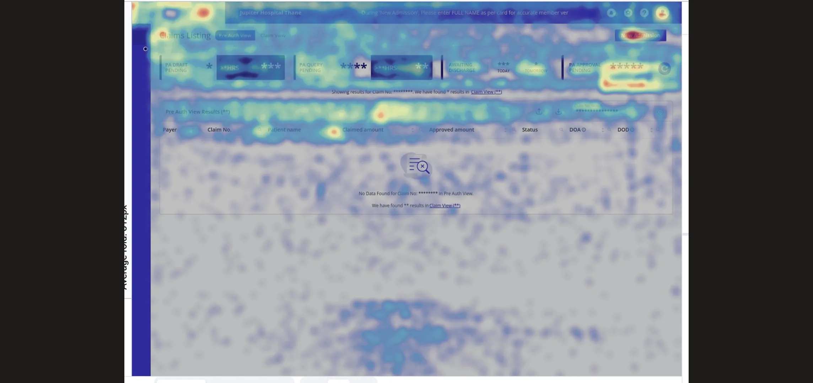
Clicks clustered at the top of the screen, on New Admission, search and the Approval Pending bucket. The table below went unused.
Google Analytics · Events data
80%+
Of column searches used Patient Name (68%) or Claim Number (20%). UTR was 12%, but the Claim team can't work without it.
From discovery research
This wasn't a screen problem. The structure didn't match how hospitals work, so staff used search to get around it.
Synthesis across Hotjar + GA
User comments
"If there's a query pending at the discharge stage, I don't even get to know. I can't tell my team to start working on it."
Hospital insurance head
"Our claims are all mixed up. Patients come and ask us whats the status, i have to search the claim every time, we are really busy you know ?"
Hospital insurance staff
"So much work! I keep searching for claims ready for discharge. If I miss one, patient discharge gets delayed and my supervisor scolds me"
Hospital insurance staff
"Hospitals scold us asking why are we paying, why cant you guys add global search feature ?"
IHX account managers
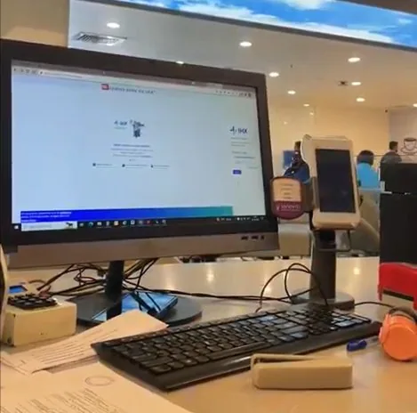
What I decided and why
01Two views, joined by a toggle
I took the study findings to the PM, who checked them against what he was hearing from hospitals. We landed on two views: a PA View for the Pre-Auth team and a Claim View for the Claim team.
The obvious next step was a fixed view per role. I recommended a toggle instead, because in smaller hospitals one person does both jobs. Split teams each get their own view, and everyone else switches in one click.
Each view follows one pattern: stage buckets, then secondary filters, then the table. Five later IHX modules reused it with no new architecture work.
Hospitals had asked for global search since launch, but engineering found Elasticsearch too expensive and complex at our database size. GA showed Patient Name, Claim Number and UTR covered almost every search, so I recommended a scoped search across those three fields, with partial match.
The scoped search field: Patient Name, Claim Number or UTR, with partial match.
03Buckets agreed with the hospitals who use them
I worked out the buckets with the PM. Pre-Auth buckets follow time (Awaiting Discharge splits today and tomorrow), and Claim buckets follow settlement status. We then ran four rounds of moderated feedback sessions with 2 to 3 hospitals each, covering Pre-Auth staff, Claim staff and supervisors.
Round 1
What we learned. Both teams found their own view without help. Pre-Auth staff didn't need a Discharge Tomorrow bucket.
What changed. The PA/Claim split was confirmed. That bucket was removed.
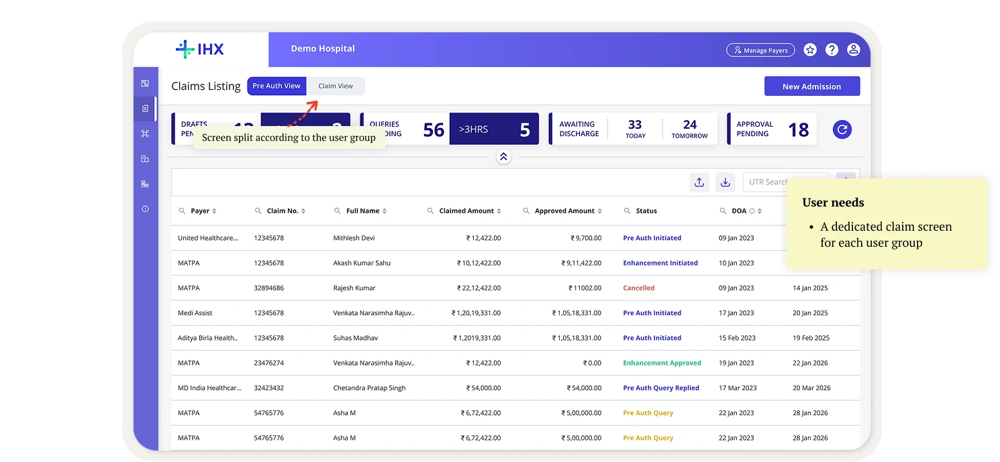
Round 2
What we learned. Some bucket names weren't clear. Staff asked for a date filter. Supervisors needed several statuses at once.
What changed. Names reworked.
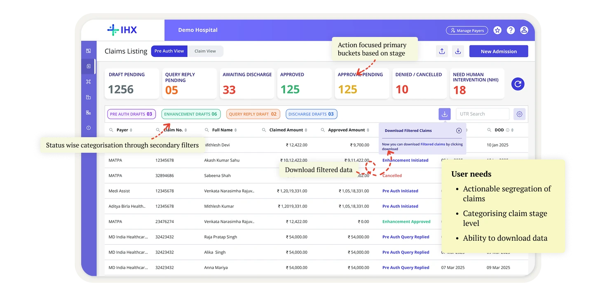
Round 3
What we learned. Bucket names agreed across five hospitals.
What changed. Final names. Multi-select filters and the date filter added.
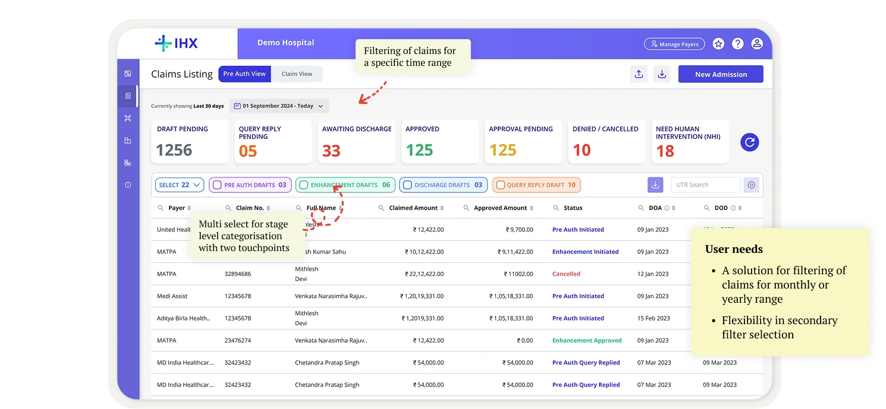
Round 4
What we learned. Scoped search and the follow-up feature worked.
What changed. Follow-up timing made configurable per insurer.
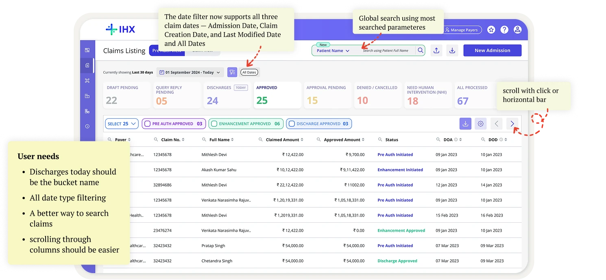
04Follow-up timing set per insurer
When a claim sat in Approval Pending with no reply, staff left IHX to email the insurer from their own inbox. The new structure gave follow-up a natural home: an action in the claim list, next to how long the claim has been waiting.
The real decision was when to follow up. Each insurer works on its own timeline, and each hospital has its own agreement with each insurer, so a single default would have been wrong for most. The waiting time is configurable per insurer, in Manage Configuration, and shows in the claim list as an elapsed time column.
The follow-up action in the claim list, next to the elapsed time column.
05What I left out: bulk settlement
Hotjar showed the Claim team settling claims one by one every evening. We designed a bulk workflow, but shipping it alongside a structural redesign would have added risk on two fronts. We shipped the structure first and planned bulk settlement for v2.
Design details that changed the outcome
A Claim Submission bucket. Claim submission is when the pre-auth becomes a final claim at discharge. Claim View now has its own bucket for claims ready to submit, with eligible claims at the top, so staff no longer search for them one by one.
Search across views. With two views, a claim searched in the wrong view returned nothing. Now an empty search shows how many results exist in the other view, with a link to switch. It's one line of copy, and it became one of the most used patterns after launch.
Multi-select filters. Single-select chips became a checkbox dropdown, so supervisors can see several statuses at once.
Date filters. A patient name search returned every claim on record for that name. A date filter narrows it to the relevant ones.
One bucket card, everywhere. Label, count, urgency and filter chips, with consistent colours: indigo for approvals, amber for queries, teal for discharge, red for denied. The same card runs across seven IHX surfaces.
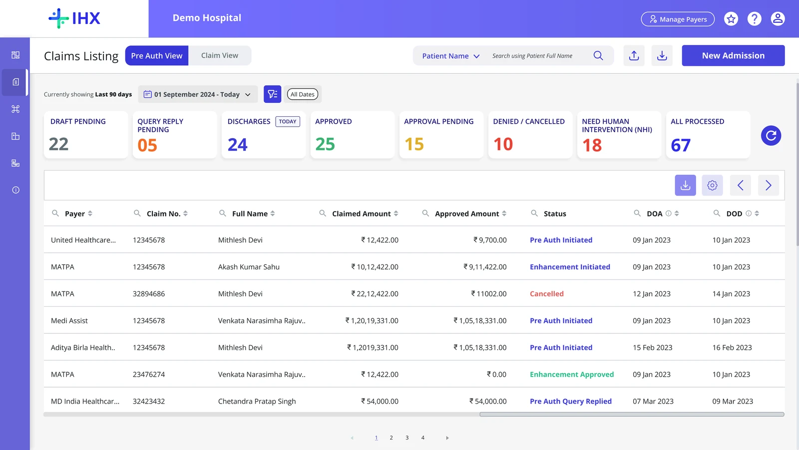
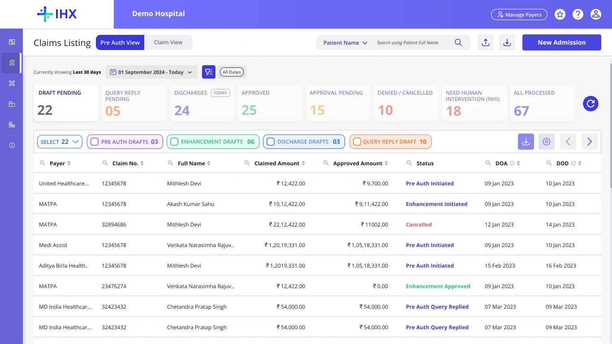
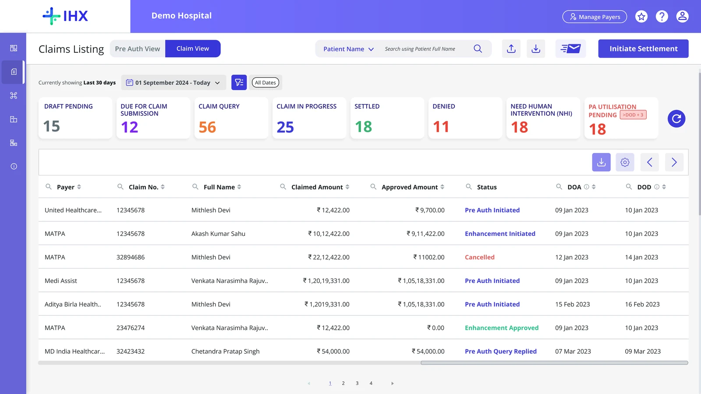
Pain points
Results
Per-Claim Price
33%
Higher, On One Enterprise Contract
Before
After
Reduced Time To Claim Submission
3.23 Min
Before
1.56 Min
After
51 %
Average Reduction
Control, old UINo change
Why I measured claim submission. It's one bucket among many, but it was the clearest test of whether buckets work:
It was the biggest visible waste. Hotjar showed Claim staff in an evening loop: search the patient name, open the claim, initiate submission, return to the list, search again. Most of the time went on finding the claim, not submitting it.
It's finance-critical. Submission is the last step before the insurer pays, so a delay holds up the hospital's money.
It's repeated all day, one claim at a time. That's where a bucket surfacing the next item should save the most time.
MeasureResultHow it was measured
Time to claim submission3.23 to 1.56 min (51% less)25 random Hotjar sessions from contracted hospitals, 2 months before vs 2 months after launch. Non-contracted hospitals on the old UI were the control.
Group hospital contracts3 signedAll three required the follow-up feature. 1-year contracts, second half of 2025.
Per-claim price33% higherOne enterprise hospital contract, 1 year, with the new dashboard as a premium feature
Adoption900+ hospitals liveContracted hospitals on the new dashboard
CSAT4.1 to 4.6 out of 5Marketing survey of hospitals, ~350 responses over 3 weeks, 2025
PA/Claim toggle4,000+ clicks in 30 daysGA, across 10 pilot hospitals
How I know the redesign drove the 51%. Only contracted hospitals got the new dashboard, while non-contracted hospitals stayed on the old UI. Over the same period, time dropped on the new dashboard and stayed flat on the old one, so it wasn't seasonality or a platform-wide change.
Since launch, we've kept adding buckets and filters based on hospital feedback.
What I learned
Look past the feature request. Hospitals asked for global search. What they needed was a dashboard that matched their two workflows, and the study, Hotjar and GA showed that before I designed anything.
Let data settle the arguments. Scoped search came from GA, not opinion. The Discharge bucket was settled by four hospitals in the same round, not by whoever pushed hardest.
Ship one big change at a time. Bulk settlement was ready, and we held it for v2 so the new structure could land on its own.
If there was more time
Measure the Pre-Auth side too. I only measured the Claim team's time. Pre-Auth is the time-critical team, so I'd measure how long they take to find and answer an insurer query.
Bring supervisors in earlier. Their need to see several statuses at once only surfaced in round 2, which meant reworking the filters. I'd observe supervisors in the user study itself.
What this shows about how I work: I design complex B2B workflows around how people actually work, and I use data to decide what to build and what to leave out.
"If there's a query pending at the discharge stage, I don't even get to know. I can't tell my team to start working on it."